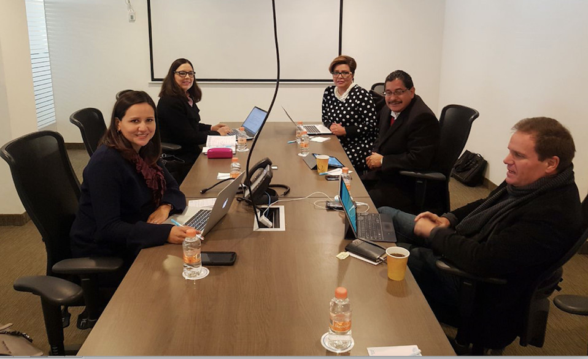

Comisión Ejecutiva del Sistema Anticorrupción del Estado de Coahuila de Zaragoza.
El 30 de enero 2018 se acordó continuar con la elaboración de la propuesta del programa de trabajo y se buscarán reuniones con los integrantes del Comité Coordinador para complementar el diagnóstico y establecer las directrices generales
La Secretaria Técnica de la Comisión Ejecutiva del Sistema Anticorrupción del Estado de Coahuila de Zaragoza, verificó la asistencia de todos los integrantes de la Comisión Ejecutiva a la primera reunión ordinaria 2018, y sometió y dio fe de la aprobación del orden del día.
El objetivo de la reunión fue revisar y discutir, el avance en el diseño del programa de trabajo de la Comisión Ejecutiva, mismo que contempla seis apartados: marco jurídico; diagnóstico; misión y visión; objetivos general y estratégicos y líneas de acción; indicadores y metas; y un mecanismo de seguimiento y evaluación.
El programa de trabajo de la Comisión Ejecutiva pretende generar la confianza de la ciudadanía, a través de la incidencia en el diseño, implementación y evaluación de la política integral anticorrupción del Estado de Coahuila.
Como parte de los acuerdos de esta reunión, se continuará con la elaboración de la propuesta de programa y se buscarán reuniones con los integrantes del Comité Coordinador para complementar el diagnóstico y establecer las directrices generales que deberán de formar parte de dicho programa.
Estuvieron presentes la Mtra. Marcela Castañeda Agüero, Mtra. Ana Yuri Solís Gaona, Lic. María de Lourdes de Koster López, Ing. Juan Adolfo Von Bertrab Saracho y el Lic. Carlos Rangel Orona.
Primera sesión ordinaria 2018 de la Comisión Ejecutiva del Sistema Anticorrupción del Estado de Coahuila de Zaragoza
30 de enero 2018.
